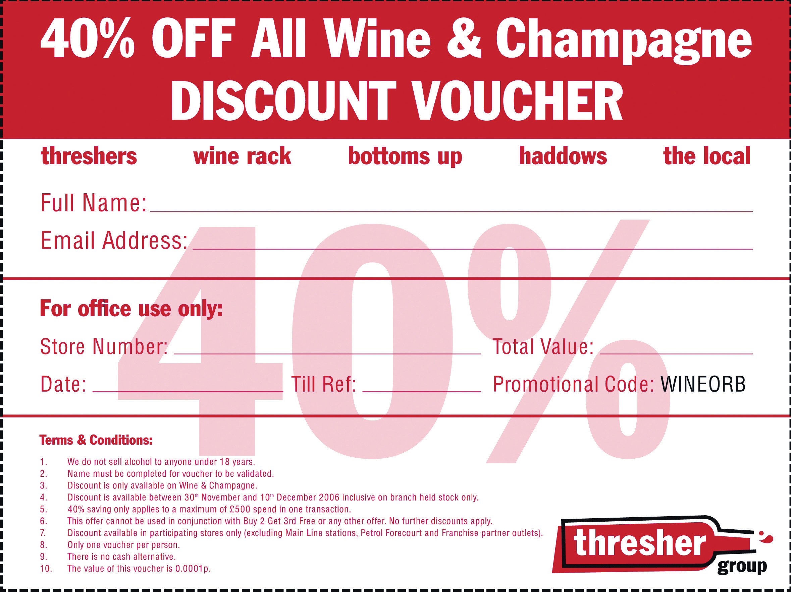
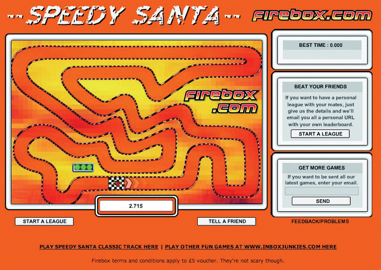

Word-of-mouth marketing is powerful. Edelman’s 2010 Trust Barometer shows that 44 percent of respondents trust “a person like me” as a spokesperson.“Edelman Trust Barometer 2010,” Edelman, 2010, http://www.edelman.co.uk/trustbarometer/files/edelman-trust-barometer-2010.pdf (accessed May 10, 2010). In Chapter 8 "Social Media", you learned some of the ways that marketers can tap into the media that promote this kind of trust. Messages passed on from “a person like me” is word-of-mouth marketing, and online that same message can be passed on through social media.
Viral marketing is a form of word-of-mouth marketing that aims to result in a message spreading exponentially. It takes its name from a virus because of the similarities that marketers aim to emulate:
The term “viral marketing” was probably first coined by Jeffrey Rayport in an article “The Virus of Marketing” in the December 1996 issue of Fast Company.Jeffrey Rayport, “The Virus of Marketing,” Fast Company, December 31, 1996, http://www.fastcompany.com/magazine/06/virus.html (accessed May 10, 2008). That’s not to say that there weren’t viral marketing campaigns before that, but as the Internet developed, so have the electronic tools for passing on information.
Word of mouth has existed as long as there have been words and mouths, but it is a fairly recent phenomenon in the world of marketing. Positive word of mouth can have a tremendous impact on a brand and can take up little to nothing of the marketing department’s budget. However, planning for and measuring word of mouth can be tricky and unpredictable.
As the connected nature of the Internet has allowed for easier spreading and tracking of word-of-mouth information, it has become possible to see how this can be modeled on the spread of a virus in a population.
Viral growth occurs when a message is spread exponentially. Viral marketing campaigns work when a message is spread exponentially and it results in a desired outcome for a brand. Viral marketing utilizes electronic means to spread messages. It harnesses the electronic connectivity of individuals to ensure marketing messages are referred from one person to another.
Viral marketing campaigns can be tricky and unpredictable. However, the lure of exponential growthIf growth more than doubles with each iteration, it is exponential., at a very low marginal cost, means that they are being attempted more often.
MSN Hotmail, the Web e-mail service purchased by Microsoft, grew to thirty million members in just two and a half years from its launch in July 1996. A large part of its exponential growth is attributed to the sign-up link that was in the footer of every e-mail sent with the service. When the company launched, every outgoing message from this platform contained an advertisement for Hotmail and a link to its Web site at the bottom of the e-mail. As people e-mailed their friends and colleagues, they were also advertising the service. Recipients could simply click on the link and sign themselves up, and as they continued to e-mail friends from their new account, the message spread within existing social networks and was passed along with little effort from the company. Hotmail went from zero to thirty million users within the first three years, and today has over five hundred million users worldwide.
There are two types of viral marketing campaigns:
Organic (or in-the-wild) viral campaigns grow with little or no input from the marketer. Sometimes, a message is passed around in a viral nature without any intention from the marketer. Usually this happens with negative messages about a brand, but it can also be a happy coincidence for a brand if the message is positive.
Organic word of mouthInformation that is passed between people, as opposed to messages from a company to people. is credited with the sudden increase in the popularity of Hush Puppies shoes in the mid-1990s. Word of mouth increased sales from an all time low of 30,000 in 1994, to 430,000 in 1995, and to four times that the following year.
This is an example of an organic viral campaign:
When successful, this type of campaign can build tremendous brand equity at a marginal cost. Because the communication takes place directly between consumers, the marketer has to be prepared to let go of their brand so that the message and flow of communication is not restricted. This is vital to ensuring the viral campaign is a success, as people are more likely to try a new product or fulfill the campaign goal if their friend or a trusted source referred them.
Amplified (or controlled) campaigns have been strategically planned, have defined goals for the brand being marketed, and usually have a distinct method of passing on the message (that can be tracked and quantified by the marketer). The Hotmail example above is a controlled campaign:
A viral campaign can be an important part of an eMarketing strategy. Viral marketing campaigns contribute in a number of ways:
Threshers is an off-license chain in the United Kingdom. Stormhoek, a South African winery, is one of the brands that they sell. In November 2006, Threshers put a voucher on its Web site offering 40 percent off all wines and champagnes between November 30 and December 10. Stormhoek, which had a large following online through its blog at http://www.stormhoek.com, asked if it could pass on the offer to its audience. Threshers’ response: “Of course, it’s just a blog.” Stormhoek posted the voucher to its blog on Friday, November 24. Hugh MacLeod, a partner in the winery who was also working with Stormhoek on its online strategy, also posted the voucher to his popular blog, http://www.gapingvoid.com.
On Monday, November 27 there were 37,000 downloads of the voucher; Tuesday saw 56,000 downloads; and on Friday, December 1, the day the promotion started, the voucher was downloaded 715,000 times.
Figure 10.1
Source: Used by permission from Stormhoek.
By December 5, the voucher had been downloaded 3.5 million times. BBC News reported on December 1 that “queues have formed at one store while the Threshers Web site has crashed under the strain of demand for the offer.” And within the first five days of the offer, Threshers reported a 60 percent increase in weekend sales, with many stores selling one week’s worth of wine in a single day, queues out the door, and stocks depleted by 80 percent in some shops.
The Threshers Web site (http://www.threshergroup.com) saw 30,000 downloads of the voucher, about 1 percent of the total downloads. Stormhoek found that being at the center of a viral marketing phenomenon saw branding and sales increase. In addition to television and print press mentions, Stormhoek saw sales of its wines increase at other stores, not just at Threshers. There was no promotion or discount at the other stores.
Stormhoek has won awards for its innovative use of social media to disrupt the wine market and increase wine sales, and Christmas 2006 saw that happen once again.
Viral campaigns are unpredictable. As the market becomes saturated with more campaigns competing for attention, it is increasingly difficult for marketers to ensure a hit. However, careful planning means that you are ready when your campaign takes off. Careful planning also means that you have given the campaign the best chance of success.
A video created by your department and watched by millions of people on the Internet is certainly an attractive proposition, but if it does nothing to contribute to your business goals, it is a fun but pointless exercise. Can this medium reach your target market?
Determine if your campaign will be aimed at building brand awareness, driving traffic to your Web site, growing anticipation for a new product, building lots of SEO links, or making sure customers make a purchase right away. Viral campaigns should always build you links, whether or not that is a main aim of the campaign. Because of this, you should try to influence the anchor text—or the visible, clickable text in a link—being used.
On the Internet, there is a lot going on. For a campaign to be worthy of sending on, it has to stand out from the clutter. You need to be original by doing some of the following things:
A mashup is when content from two or more sources is combined. Search for “mashup” on YouTube to watch some examples.
Burger King created the Web site “Subservient Chicken” (http://www.subservientchicken.com), where anyone could tell a man dressed up in a chicken suit what to do. It is very funny and quite bizarre. It got a lot of traffic. Hotmail made their e-mail service available to anyone. When Gmail was launched, it was by invitation only, and Google ensured that the invites were scarce. People talked about both services quite a bit.
Using controversial or enticing names for viral content makes it more likely that your audience will want to investigate further. For videos, thumbnails are exceptionally important in enticing visitors to hit the play button.
The easier a message is to pass on, the more likely it will be passed on. E-mails should include “forward to a friend” links, and a “send to a friend” link can be added easily to any Web page.
Viral marketers can make use of existing social media both as an environment in which to host their message and as a means to share their message. For example, using a popular video-hosting site, such as YouTube, for a viral video makes it easy for users to embed the video onto their own sites.
For best response, personalize e-mails automated by the sharing process (with subject lines like “Your friend Mark Hunter thought you’d find this amusing”). And for best SEO practice, tell users how to link to your content.
For campaigns that require interaction, it should be as easy as possible for users to sign up and get interacting. Lengthy sign-up forms asking for lots of information will slow and can even halt your campaign.
It’s a viral marketing campaign for a brand, and marketers who pretend otherwise can see the attempt blowing up in their faces. Studies have shown that branding does not have a significant detrimental effect to the contagious nature of a viral campaign.
The greatest incentive for users sharing your content is social currencyA measure of a person’s power and influence within a defined social group.: something that users will want to share. People like to be seen by their friends and colleagues as resourceful, caring, or humorous, and the content you create should tie in with those values. Tailoring your content for your target market will give you even better results.
Incentives can be financial: a gift voucher for every five friends the campaign is sent to. Or users could be entered into a competition for every ten friends they refer. However, campaigns work best when the prize does not eclipse the content. Increasing social currency works for a brand, too; it will increase brand equity.
Alternate reality games (ARGs) are often used successfully as viral marketing campaigns. One prominent successful campaign was “I Love Bees” for the launch of Halo 2. Do a quick search online—it’s fascinating.
Sophisticated alternate reality games (ARGs)A game that takes place in both the real world and in a fantasy world, and usually involves an online component. usually involve hiding messages and making them cryptic, but for the most part, marketers want their campaign to be very available. Research your target market and make sure that they can access your campaign easily based on their usual online habits.
With any successful campaign, the spread of the message can usually be traced to several core influencers: those people responsible for the viral growth. Influencers tend to affect a large number of people either by sending the message to lots of people or by causing lots of people to want to emulate them. However, influencers are difficult to identify prior to success, and so seeding a campaign should attract as large an audience as possible.
Be aware, as well, that editorial mentions in traditional media can also create a huge amount of traffic for a campaign, so press releases still need to be part of the seeding process.
Using forums and inciting blog comments can all help get content out there.
Be sure that the medium does not eclipse your message. If you have taken the time to create compelling and engaging content, make the most of the interaction you have with a potential customer. Be very clear about your call to actionCopy that encourages users to take a particular action., or the action you want the user to take next:
Monitor interactions with your brand from consumers so you can see growth and response. Make sure you are aware of the many ways that users could be talking about you. Chapter 11 "Online Reputation Management" provides guidelines for the process of listening online. If the campaign is growing, but the message is not as intended, there might need to be some adjustments made.
Figure 10.2
Viral marketing uses communities to broadcast your message.
Analyze what elements of the campaign work, so that when the next one is launched, these can be optimized.
Tracking software ForwardTrack (http://forwardtrack.eyebeamresearch.org) shows the geographical spread of a campaign over time and also lets participants see the spread of the campaign. This tracking solution can become a part of the marketing of the viral message.
TubeMogul (http://www.tubemogul.com) and VidMetrix (http://www.vidmetrix .com) both provide tracking and audience analysis for online videos.
Careful planning and great content with an enticing incentive should all result in a campaign that is successful. A little bit of luck is usually required for a campaign to fly.
Define the aims of the campaign and determine how success will be measured.
With a viral campaign flying around the Internet, a company should be ready to capitalize on the benefits of the campaign.
Anticipate wild success and ensure that the server can cope with the additional traffic. Nothing will kill a campaign faster than it being unavailable, and this has happened countless times.
Ensure that all parties know about the viral marketing campaign so that they can be prepared for any feedback that arises from this. If there is a cryptic element involved, or information that should not be released, ensure that all employees know about this.
If the campaign is to increase sales, be sure that there is sufficient stock in place.
With millions of people being exposed to a brand, a company should plan to make the most of this first contact. As well providing all the tools to send a campaign on, a well-planned campaign will also ask their audience permission to keep in touch with them. Build on the nature of the campaign and ensure that future communications are not far removed from the viral campaign.
Consider the additional traffic and traction if the campaign becomes a case study, archived and accessed by marketers, journalists, and other interested parties. Make the most of this additional latent traffic avenue by preparing useful case studies, screenshots, and contact details. Even though the viral marketing campaign may be over, make sure it appears in online conversations and continues to generate traffic and links for your company.
If possible, keep relevant Web sites up and running and games still available once a campaign has finished.
AstroturfingCovert and manipulative use of word of mouth. refers to parties trying to manipulate word of mouth and comes from the term “grassroots campaigning.” Sometimes referred to as “stealth marketing,” it can also be a viral campaign killer.
Astroturfing usually occurs in the seeding period of a campaign. Employees may use fake names to try to seedThe process of initiating a viral campaign through strategic online placement. a campaign on forums, in blog comments, and through services such as Digg (http://www.digg.com). Communities are quick to pick up on false commentary, and this can be disastrous for a campaign. As with all social media interactions, transparency and authenticity can be far better for traction.
Firebox.com, a leading UK gifts and gadgets e-tailer, hired agency Inbox.co.uk to create the most popular Christmas viral of December 2004. The viral concept also needed to drive traffic to the Firebox.com site to boost sales of toys and gadgets. Inbox.co.uk created an addictive game based on a simple idea: drag Santa around his Lapland track in the quickest time.
Figure 10.3 The Speedy Santa Game on Firebox.com
Source: Used by permission from Firebox.com.
Players were given a global position at the end of each lap, and every player who completed a lap of the Firebox track won a £5 Firebox voucher.
The hook: A system of private leagues was devised where players could invite four friends or colleagues to join a leader board. Everyone in that league was e-mailed a personal Web site link and scores were updated in real time.
These leagues proved to be a big hit and created a lot of office buzz. Within four days, the game was number one in the FHM Top 100 games. The Speedy Santa game was played over twenty-two million times in the run-up to Christmas. On average, people played the game over sixty times each. Of people who played the Firebox Speedy Santa game, 87 percent clicked through to the Firebox.com site, at a cost to Firebox of under $0.02 per click-through. And they each had a Firebox voucher to spend right before Christmas.
Christian Robinson, marketing director of Firebox.com, said, “It has definitely been one of the most successful promotions we have ever run, generated hundreds of thousands of pounds in revenue and bringing the Firebox brand to tens of thousands of new customers.”Christian Robinson, personal communication with Sarah Blake.
“3.5 Million Thresher’s Vouchers and Counting: How Stormhoek—a Small South African Winery—Is Changing the Way That Wine Is Communicated and Sold Forever,” PR Newswire, December 5, 2006, http://www.prnewswire.de/cgi/news/release?id=185858 (accessed May 10, 2008).
“Firebox: New Viral Game for Dotcom,” Inbox DMG, http://in-box.co.uk/work.php?cid=Firebox (accessed May 10, 2008).
Malcolm Gladwell, The Tipping Point: How Little Things Can Make a Big Difference (New York: Back Bay Books, 2002).
Heather Hopkins, “Threshers Voucher Creates Storm Online,” Hitwise, December 5, 2006, http://weblogs.hitwise.com/heather-hopkins/2006/12/threshers_voucher_creates_stor.html (accessed May 10, 2008).
“The Likelihood That People Will Share Branded Versus Non-branded Content,” Viral Manager, http://www.viralmanager.com/strategy/research_documents/The_Impact_of_Branding_on_Virals (accessed May 10, 2008).
“MSN Hotmail: From Zero to 30 Million Members in 30 Months,” Microsoft, February 8, 1999, http://www.microsoft.com/presspass/features/1999/02-08hotmail.mspx (accessed May 10, 2008).
“Private Sale at Thresher’s,” Stormhoek, November 24, 2006, http://www.stormhoek.com/archives/2006/11/private_web_onl.php (accessed May 10, 2008).
“Web Discount Frenzy at Threshers,” BBC News, December 1, 2006, http://news.bbc.co.uk/2/hi/business/6198828.stm (accessed May 10, 2010).